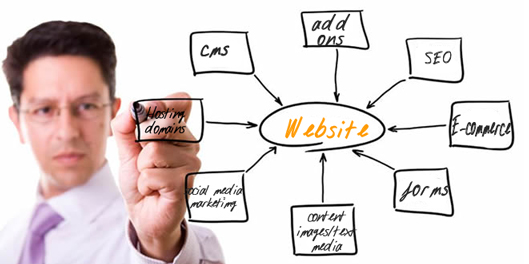

Por que Criar um Site é Essencial no Mundo Digital?
No cenário atual, em que a internet domina a forma como interagimos, consumimos e tomamos decisões, ter um site é mais do que uma opção; é uma necessidade. Seja para empreendedores, profissionais liberais ou empresas consolidadas, um site é uma ferramenta poderosa para se destacar e alcançar resultados reais.
Neste blog, vamos explorar os principais motivos pelos quais a criação de um site deve estar na sua lista de prioridades e como isso pode transformar sua presença no mercado.
Primeiras Impressões Contam
Imagine que um cliente em potencial pesquisa pelo seu negócio na internet. O que ele encontra? Se você não tiver um site, as chances de parecer menos profissional ou acessível aumentam. Um site bem projetado serve como o rosto digital da sua marca, criando uma primeira impressão duradoura e transmitindo confiança.
Alcance Global ao Seu Alcance
Com um site, os limites físicos deixam de existir. Sua marca pode alcançar clientes em diferentes regiões, países e até continentes. Essa possibilidade de expansão global não apenas aumenta a visibilidade, mas também oferece oportunidades de crescimento que antes pareciam inalcançáveis.
Controle Total da Sua Mensagem
s redes sociais são ferramentas úteis, mas seus algoritmos podem limitar a visibilidade do seu conteúdo. Um site, por outro lado, dá a você o controle total sobre como apresentar sua mensagem, produtos e serviços. Aqui, você é o dono da narrativa.
Ser Encontrado Facilmente
Um dos maiores benefícios de ter um site é a possibilidade de otimizá-lo para os motores de busca. Com técnicas de SEO (Search Engine Optimization), seu site pode aparecer nas primeiras posições do Google, aumentando significativamente o tráfego orgânico e atraindo o público-alvo certo.
Canal Direto de Comunicação
Além de exibir informações sobre seus serviços, um site pode incluir funcionalidades como blogs, formulários de contato, chats ao vivo e boletins informativos. Essas ferramentas tornam a comunicação mais eficiente e ajudam a criar um relacionamento mais próximo com seu público.
Diferencie-se da Concorrência
Seu site pode ser o hub central de todas as suas campanhas digitais. Anúncios nas redes sociais, e-mails promocionais e outros esforços de marketing têm como objetivo direcionar o público para um local específico: seu site. É onde a mágica acontece!
Criar um site não é apenas marcar presença no mundo digital. É posicionar sua marca para competir, crescer e se conectar com o público de forma significativa. Se você ainda não deu esse passo, talvez seja hora de repensar. Afinal, o futuro é digital, e o primeiro passo para ele começa com um clique.
Ficou interessado?
Então preencha os campos abaixo para receber mais informações sobre noossos produtos e serviços